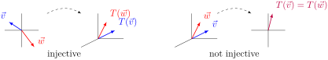
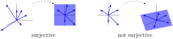
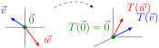
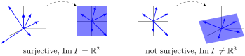
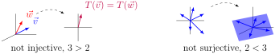

Section3.4Injective and Surjective Linear Maps (AT4)
Learning Outcomes
Determine if a given linear map is injective and/or surjective.
Subsection3.4.1Warm Up
Activity3.4.1.
Consider the linear transformation \(T\colon\IR^4\to\IR^3\) that is represented by the standard matrix \(A=\left[\begin{array}{cccc} 3 & 4 & 7 & 1\\ -1 & 1 & 0 & 2 \\ 2 & 1 & 3 & -1 \end{array}\right].\) Which of the following processes helps us compute a basis for \(\Im T\) and which helps us compute a basis for \(\ker T\text{?}\)
Compute \(\RREF(A)\) and consider the set of columns of \(A\) that correspond to columns in \(\RREF(A)\) with pivots.
Calculate a basis for the solution space to the homogenous system of equations for which \(A\) is the coefficient matrix.
Subsection3.4.2Class Activities
Definition3.4.2.
Let \(T: V \rightarrow W\) be a linear transformation. \(T\) is called injective or one-to-one if \(T\) does not map two distinct vectors to the same place. More precisely, \(T\) is injective if \(T(\vec{v}) \neq T(\vec{w})\) whenever \(\vec{v} \neq \vec{w}\text{.}\)

Figure30.An injective transformation and a non-injective transformation
Yes, because \(T(\vec v)=T(\vec w)\) whenever \(\vec v=\vec w\text{.}\)
Yes, because \(T(\vec v)\not=T(\vec w)\) whenever \(\vec v\not=\vec w\text{.}\)
No, because \(T\left(\left[\begin{array}{c}0\\0\\1\end{array}\right]\right)
\not=
T\left(\left[\begin{array}{c}0\\0\\2\end{array}\right]\right)
\text{.}\)
No, because \(T\left(\left[\begin{array}{c}0\\0\\1\end{array}\right]\right)
=
T\left(\left[\begin{array}{c}0\\0\\2\end{array}\right]\right)
\text{.}\)
Activity3.4.4.
Let \(T: \IR^2 \rightarrow \IR^3\) be given by
\begin{equation*}
T\left(\left[\begin{array}{c}x \\ y \end{array}\right] \right)
=
\left[\begin{array}{c} x \\ y \\ 0 \end{array}\right]
\hspace{3em}
\text{with standard matrix }
\left[\begin{array}{cc} 1 & 0 \\ 0 & 1 \\ 0 & 0 \end{array}\right]
\end{equation*}
Is \(T\) injective?
Yes, because \(T(\vec v)=T(\vec w)\) whenever \(\vec v=\vec w\text{.}\)
Yes, because \(T(\vec v)\not=T(\vec w)\) whenever \(\vec v\not=\vec w\text{.}\)
No, because \(T\left(\left[\begin{array}{c}1\\2\end{array}\right]\right)
\not=
T\left(\left[\begin{array}{c}3\\4\end{array}\right]\right)
\text{.}\)
No, because \(T\left(\left[\begin{array}{c}1\\2\end{array}\right]\right)
=
T\left(\left[\begin{array}{c}3\\4\end{array}\right]\right)
\text{.}\)
Definition3.4.5.
Let \(T: V \rightarrow W\) be a linear transformation. \(T\) is called surjective or onto if every element of \(W\) is mapped to by an element of \(V\text{.}\) More precisely, for every \(\vec{w} \in W\text{,}\) there is some \(\vec{v} \in V\) with \(T(\vec{v})=\vec{w}\text{.}\)

Figure31.A surjective transformation and a non-surjective transformation
Activity3.4.6.
Let \(T: \IR^2 \rightarrow \IR^3\) be given by
\begin{equation*}
T\left(\left[\begin{array}{c}x \\ y \end{array}\right] \right)
=
\left[\begin{array}{c} x \\ y \\ 0 \end{array}\right]
\hspace{3em}
\text{with standard matrix }
\left[\begin{array}{cc} 1 & 0 \\ 0 & 1 \\ 0 & 0 \end{array}\right]
\end{equation*}
Is \(T\) surjective?
Yes, because for every \(\vec w=\left[\begin{array}{c}x\\y\\z\end{array}\right]\in\IR^3\text{,}\) there exists \(\vec v=\left[\begin{array}{c}x\\y\end{array}\right]\in\IR^2\) such that \(T(\vec v)=\vec w\text{.}\)
No, because \(T\left(\left[\begin{array}{c}x\\y\end{array}\right]\right)\) can never equal \(\left[\begin{array}{c} 1 \\ 1 \\ 1 \end{array}\right]
\text{.}\)
No, because \(T\left(\left[\begin{array}{c}x\\y\end{array}\right]\right)\) can never equal \(\left[\begin{array}{c} 0 \\ 0 \\ 0 \end{array}\right]
\text{.}\)
Yes, because for every \(\vec w=\left[\begin{array}{c}x\\y\end{array}\right]\in\IR^2\text{,}\) there exists \(\vec v=\left[\begin{array}{c}x\\y\\42\end{array}\right]\in\IR^3\) such that \(T(\vec v)=\vec w\text{.}\)
Yes, because for every \(\vec w=\left[\begin{array}{c}x\\y\end{array}\right]\in\IR^2\text{,}\) there exists \(\vec v=\left[\begin{array}{c}0\\0\\z\end{array}\right]\in\IR^3\) such that \(T(\vec v)=\vec w\text{.}\)
No, because \(T\left(\left[\begin{array}{c}x\\y\\z\end{array}\right]\right)\) can never equal \(\left[\begin{array}{c} 3\\-2 \end{array}\right]
\text{.}\)
Activity3.4.8.
Let \(T: V \rightarrow W\) be a linear transformation where \(\ker T\) contains multiple vectors. What can you conclude?
\(T\) is injective
\(T\) is not injective
\(T\) is surjective
\(T\) is not surjective
Fact3.4.9.
A linear transformation \(T\) is injective if and only if\(\ker T = \{\vec{0}\}\text{.}\) Put another way, an injective linear transformation may be recognized by its trivial kernel.

Figure32.A linear transformation with trivial kernel, which is therefore injective
Activity3.4.10.
Let \(T: V \rightarrow \IR^3\) be a linear transformation where \(\Im T\) may be spanned by only two vectors. What can you conclude?
\(T\) is injective
\(T\) is not injective
\(T\) is surjective
\(T\) is not surjective
Fact3.4.11.
A linear transformation \(T:V \rightarrow W\) is surjective if and only if\(\Im T = W\text{.}\) Put another way, a surjective linear transformation may be recognized by its identical codomain and image.

Figure33.A linear transformation with identical codomain and image, which is therefore surjective; and a linear transformation with an image smaller than the codomain \(\IR^3\text{,}\) which is therefore not surjective.
Definition3.4.12.
A transformation that is both injective and surjective is said to be bijective.
Activity3.4.13.
Let \(T: \IR^n \rightarrow \IR^m\) be a linear map with standard matrix \(A\text{.}\) Determine whether each of the following statements means \(T\) is (A) injective, (B) surjective, or (C) bijective (both).
The kernel of \(T\) is trivial, i.e. \(\ker T=\{\vec 0\}\text{.}\)
The image of \(T\) equals its codomain, i.e. \(\Im T=\IR^m\text{.}\)
For every \(\vec w\in \IR^m\text{,}\) the set \(\{\vec v\in \IR^n|T(\vec v)=\vec w\}\) contains exactly one vector.
Activity3.4.14.
Let \(T: \IR^n \rightarrow \IR^m\) be a linear map with standard matrix \(A\text{.}\) Determine whether each of the following statements means \(T\) is (A) injective, (B) surjective, or (C) bijective (both).
The columns of \(A\) span \(\IR^m\text{.}\)
The columns of \(A\) form a basis for \(\IR^m\text{.}\)
The columns of \(A\) are linearly independent.
Activity3.4.15.
Let \(T: \IR^n \rightarrow \IR^m\) be a linear map with standard matrix \(A\text{.}\) Determine whether each of the following statements means \(T\) is (A) injective, (B) surjective, or (C) bijective (both).
\(\RREF(A)\) is the identity matrix.
Every column of \(\RREF(A)\) has a pivot.
Every row of \(\RREF(A)\) has a pivot.
Activity3.4.16.
Let \(T: \IR^n \rightarrow \IR^m\) be a linear map with standard matrix \(A\text{.}\) Determine whether each of the following statements means \(T\) is (A) injective, (B) surjective, or (C) bijective (both).
The system of linear equations given by the augmented matrix \(\left[\begin{array}{c|c}A & \vec{b} \end{array}\right]\) has a solution for all \(\vec{b} \in \IR^m\text{.}\)
The system of linear equations given by the augmented matrix \(\left[\begin{array}{c|c}A & \vec{b} \end{array}\right]\) has exactly one solution for all \(\vec{b} \in \IR^m\text{.}\)
The system of linear equations given by the augmented matrix \(\left[\begin{array}{c|c} A & \vec{0} \end{array}\right]\) has exactly one solution.
Observation3.4.17.
The easiest way to determine if the linear map with standard matrix \(A\) is injective is to see if \(\RREF(A)\) has a pivot in each column.
The easiest way to determine if the linear map with standard matrix \(A\) is surjective is to see if \(\RREF(A)\) has a pivot in each row.
Activity3.4.18.
What can you conclude about the linear map \(T:\IR^2\to\IR^3\) with standard matrix \(\left[\begin{array}{cc} a & b \\ c & d \\ e & f \end{array}\right]\text{?}\)
Its standard matrix has more columns than rows, so \(T\) is not injective.
Its standard matrix has more columns than rows, so \(T\) is injective.
Its standard matrix has more rows than columns, so \(T\) is not surjective.
Its standard matrix has more rows than columns, so \(T\) is surjective.
Activity3.4.19.
What can you conclude about the linear map \(T:\IR^3\to\IR^2\) with standard matrix \(\left[\begin{array}{ccc} a & b & c \\ d & e & f \end{array}\right]\text{?}\)
Its standard matrix has more columns than rows, so \(T\) is not injective.
Its standard matrix has more columns than rows, so \(T\) is injective.
Its standard matrix has more rows than columns, so \(T\) is not surjective.
Its standard matrix has more rows than columns, so \(T\) is surjective.
Fact3.4.20.
The following are true for any linear map \(T:V\to W\text{:}\)
If \(\dim(V)>\dim(W)\text{,}\) then \(T\) is not injective.
If \(\dim(V)<\dim(W)\text{,}\) then \(T\) is not surjective.
Basically, a linear transformation cannot reduce dimension without collapsing vectors into each other, and a linear transformation cannot increase dimension from its domain to its image.

Figure34.A linear transformation whose domain has a larger dimension than its codomain, and is therefore not injective; and a linear transformation whose domain has a smaller dimension than its codomain, and is therefore not surjective.
But dimension arguments cannot be used to prove a map is injective or surjective.
Activity3.4.21.
Suppose \(T: \IR^n \rightarrow \IR^4\) with standard matrix \(A=\left[\begin{array}{cccc}
a_{11}&a_{12}&\cdots&a_{1n}\\
a_{21}&a_{22}&\cdots&a_{2n}\\
a_{31}&a_{32}&\cdots&a_{3n}\\
a_{41}&a_{42}&\cdots&a_{4n}\\
\end{array}\right]\) is bijective.
(a)
How many pivot rows must \(\RREF A\) have?
(b)
How many pivot columns must \(\RREF A\) have?
(c)
What is \(\RREF A\text{?}\)
Activity3.4.22.
Let \(T: \IR^n \rightarrow \IR^n\) be a bijective linear map with standard matrix \(A\text{.}\) Label each of the following as true or false.
\(\RREF(A)\) is the identity matrix.
The columns of \(A\) form a basis for \(\IR^n\)
The system of linear equations given by the augmented matrix \(\left[\begin{array}{c|c} A & \vec{b} \end{array}\right]\) has exactly one solution for each \(\vec b \in \IR^n\text{.}\)
Observation3.4.23.
The easiest way to show that the linear map with standard matrix \(A\) is bijective is to show that \(\RREF(A)\) is the identity matrix.
Activity3.4.24.
Let \(T: \IR^3 \rightarrow \IR^3\) be given by the standard matrix
\begin{equation*}
T\left(\left[\begin{array}{ccc} x \\ y \\ z \end{array}\right] \right) =
\left[\begin{array}{c} 2x+y-z \\ 4x+y+z \\ 6x+2y\end{array}\right].
\end{equation*}
Which of the following must be true?
\(T\) is neither injective nor surjective
\(T\) is injective but not surjective
\(T\) is surjective but not injective
\(T\) is bijective.
Activity3.4.26.
Let \(T: \IR^2 \rightarrow \IR^3\) be given by
\begin{equation*}
T\left(\left[\begin{array}{c} x \\ y \end{array}\right] \right) =
\left[\begin{array}{c} 2x+3y \\ x-y \\ x+3y\end{array}\right].
\end{equation*}
Which of the following must be true?
\(T\) is neither injective nor surjective
\(T\) is injective but not surjective
\(T\) is surjective but not injective
\(T\) is bijective.
Activity3.4.27.
Let \(T: \IR^3 \rightarrow \IR^2\) be given by
\begin{equation*}
T\left(\left[\begin{array}{c} x \\ y \\ z \end{array}\right] \right) =
\left[\begin{array}{c} 2x+y-z \\ 4x+y+z\end{array}\right].
\end{equation*}
Which of the following must be true?
\(T\) is neither injective nor surjective
\(T\) is injective but not surjective
\(T\) is surjective but not injective
\(T\) is bijective.
Subsection3.4.3Individual Practice
Activity3.4.28.
Let \(T\colon\IR^n\to\IR^m\) be a linear transformation with standard matrix \(A\text{.}\) We reasoned during class that the following statements are logically equivalent:
The columns of \(A\) are linearly independent.
\(\RREF(A)\) has a pivot in each column.
The transformation \(T\) is injective.
The system of equations given by \([A|\vec{0}]\) has a unique solution.
While they are all logically equivalent, they are different statements that offer varied perspectives on our growing conceptual knowledge of linear algebra.
(a)
If you are asked to decide if a transformation \(T\) is injective, which of the above statements do you think is the most useful?
(b)
Can you think of some situations in which translating between these four statements might be useful to you?
Activity3.4.29.
Let \(T\colon\IR^n\to\IR^m\) be a linear transformation with standard matrix \(A\text{.}\) We reasoned during class that the following statements are logically equivalent:
The columns of \(A\) span all of \(\IR^m\text{.}\)
\(\RREF(A)\) has a pivot in each row.
The transformation \(T\) is surjective.
The system of equations given by \([A|\vec{b}]\) is always consistent.
While they are all logically equivalent, they are different statements that offer varied perspectives on our growing conceptual knowledge of linear algebra.
(a)
If you are asked to decide if a transformation \(T\) is surjective, which of the above statements do you think is the most useful?
(b)
Can you think of some situations in which translating between these four statements might be useful to you?
Subsection3.4.4Videos
Figure35.Video: The kernel and image of a linear transformationFigure36.Video: Finding a basis of the image of a linear transformation
Suppose that \(f:V \rightarrow W\) is a linear transformation between two vector spaces \(V\) and \(W\text{.}\) State carefully what conditions \(f\) must satisfy. Let \(\vec{0_V}\) and \(\vec{0_W}\) be the zero vectors in \(V\) and \(W\) respectively.
Prove that \(f\) is one-to-one if and only if \(f(\vec{0_V}) = \vec{0_W}\text{,}\) and that \(\vec{0_V}\) is the unique element of \(V\) which is mapped to \(\vec{0_W}\text{.}\) Remember that this needs to be done in both directions. First, prove the if and only if statement, and then show the uniqueness.
Do not use subtraction in your proof. The only vector space operation we have is addition, and a structure-preserving function only preserves addition. If you are writing \(\vec{v} - \vec{v} = \vec{0}_V\text{,}\) what you really mean is that \(\vec{v} \oplus \vec{v}^{-1} = \vec{0}_V\text{,}\) where \(\vec{v}^{-1}\) is the additive inverse of \(\vec{v}\text{.}\)
Exploration3.4.31.
Start with an \(n\)-dimensional vector space \(V\text{.}\) We can define the dual of \(V\text{,}\) denoted \(V^*\text{,}\) by
\begin{equation*}
V^* = \{h:V \rightarrow \mathbb{R}: h \mbox{ is linear}\}.
\end{equation*}
Prove that \(V\) is isomorphic to\(V^*\text{.}\) Here are some things to think about as you work through this.
Start by assuming you have a basis for \(V\text{.}\) How many basis vectors should you have?
For each basis vector in \(V\text{,}\) define a function that returns 1 if it’s given that basis vector, and returns 0 if it’s given any other basis vector. For example, if \(\vec{b_i}\) and \(\vec{b_j}\) are each members of the basis for \(V\text{,}\) and you’ll need a function \(f_i:V \rightarrow \{0,1\}\text{,}\) where \(f_i(b_i) = 1\) and \(f_i(b_j)= 0\) for all \(j \neq i\text{.}\)
How many of these functions will you need? Show that each of them is in \(V^*\text{.}\)
Show that the functions you found in the last part are a basis for \(V^*\text{?}\) To do this, take an arbitrary function \(h \in V^*\) and some vector \(\vec{v} \in V\text{.}\) Write \(\vec{v}\) in terms of the basis you chose earlier. How can you write \(h(\vec{v})\text{,}\) with respect to that basis? Pay attention to the fact that all functions in \(V^*\) are linear.
Now that you’ve got a basis for \(V\) and a basis for \(V^*\text{,}\) can you find an isomorphism?